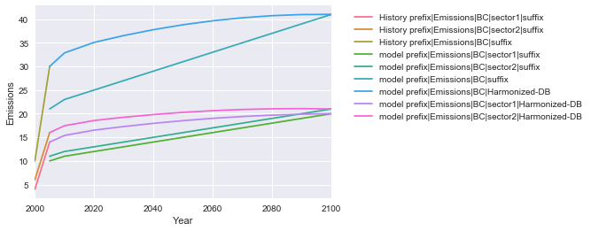

Getting Started¶
This is a simple example of the basic capabilities of aneris.
First, model and history data are read in. The model is then harmonized. Finally, output is analyzed.
In [1]:
import pandas as pd
import seaborn as sns
import matplotlib.pyplot as plt
import aneris
from aneris.tutorial import load_data
%matplotlib inline
The driver is used to execute the harmonization. It will handle the
data formatting needed to execute the harmonizaiton operation and stores
the harmonized results until they are needed.
Some logging output is provided. It can be suppressed with
aneris.logger().setLevel('WARN')
In [2]:
model, hist, driver = load_data()
for scenario in driver.scenarios():
driver.harmonize(scenario)
harmonized, metadata = driver.harmonized_results()
INFO:root:Downselecting prefix|suffix variables
INFO:root:Translating to standard format
INFO:root:Aggregating historical values to native regions
INFO:root:Harmonizing (with example methods):
INFO:root: method default \
region gas sector units
regionc BC prefix|sector1|suffix kt reduce_ratio_2100 reduce_ratio_2080
prefix|sector2|suffix kt reduce_ratio_2100 reduce_ratio_2080
override
region gas sector units
regionc BC prefix|sector1|suffix kt reduce_ratio_2100
prefix|sector2|suffix kt reduce_ratio_2100
INFO:root:and override methods:
INFO:root:region gas sector units
regionc BC prefix|sector1|suffix kt reduce_ratio_2100
prefix|sector2|suffix kt reduce_ratio_2100
Name: method, dtype: object
INFO:root:Harmonizing with reduce_ratio_2100
INFO:root:Translating to IAMC template
All data of interest is combined in order to easily view it. We will
specifically investigate output for the World in this example. A few
operations are performed in order to get the data into a
plotting-friendly format.
In [3]:
data = pd.concat([hist, model, harmonized])
df = data[data.Region.isin(['World'])]
In [4]:
df = pd.melt(df, id_vars=aneris.iamc_idx, value_vars=aneris.numcols(df),
var_name='Year', value_name='Emissions')
df['Label'] = df['Model'] + ' ' + df['Variable']
In [5]:
df.head()
Out[5]:
| Model | Scenario | Region | Variable | Year | Emissions | Label | |
|---|---|---|---|---|---|---|---|
| 0 | History | scen | World | prefix|Emissions|BC|sector1|suffix | 2000 | 4.0 | History prefix|Emissions|BC|sector1|suffix |
| 1 | History | scen | World | prefix|Emissions|BC|sector2|suffix | 2000 | 6.0 | History prefix|Emissions|BC|sector2|suffix |
| 2 | History | scen | World | prefix|Emissions|BC|suffix | 2000 | 10.0 | History prefix|Emissions|BC|suffix |
| 3 | model | sspn | World | prefix|Emissions|BC|sector1|suffix | 2000 | NaN | model prefix|Emissions|BC|sector1|suffix |
| 4 | model | sspn | World | prefix|Emissions|BC|sector2|suffix | 2000 | NaN | model prefix|Emissions|BC|sector2|suffix |
In [6]:
sns.tsplot(df, time='Year', condition='Label', value='Emissions', unit='Model')
plt.legend(bbox_to_anchor=(1.05, 1))
Out[6]:
<matplotlib.legend.Legend at 0x7f335f0a3f50>
